Chapter 2 Mathematical Models of Dynamic Systems 控制系统的数学模型
数学模型
数学模型是描述系统的输入输出变量以及系统内部各个变量之间的数学表达式
动态系统的数学模型是一组方程式，他精确地或者至少相当好地表现了系统的动态特性
- 数学模型不是唯一的，一个系统可以用不同的数学模型来表达
- 许多系统的动态特性可以用微分方程来描述
- 微分方程可以利用支配系统的物理学定律，例如牛顿定律和基尔霍夫定理来得到
控制系统的数学模型
时域模型——微分方程
复域模型——传递函数
建立数学模型的方法
-
解析法
适用于“白盒子”，要根据系统工作所依据的物理定律列写运动方程
-
实验法
针对“灰盒子”、“黑盒子”，不清楚内部结构
给系统施加某种测试信号，记录输出响应，并用适当的数学模型去逼近系统的输入输出特性
数学模型的特性
相似性 similarity:
指的是不同的物理系统（例如电路、机械系统、热力系统）可能由完全相同的微分方程描述。这种数学形式上的统一使得我们可以将一个系统的分析方法直接应用于另一个系统，实现“类比”研究（如电路与机械系统的力-电压相似性）
简化性和精确性 Simplified and Accurate
在建立数学模型时，必须在模型的简化型和精确性之间做出折中考虑
一般来说，遇到新问题会先建立一个简单模型，以便对问题有一定的了解，然后再建立比较完善的数学模型，用以精确分析。
动态模型 Dynamic model:
用于描述系统随时间变化的行为，通常以微分方程（包括常微分方程或偏微分方程）的形式呈现。它关注变量(variables)及其导数(derivatives)之间的关系，主要用于分析系统的性能，如稳定性、快速性、振荡特性等
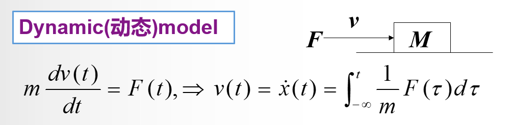
静态模型 Static model:
描述系统在平衡状态或稳态下的行为，不考虑时间变化，用代数方程(Algebraic equations)（==无微分项==）表示。它主要用于确定系统的放大倍数（增益），即输出与输入之间的比例关系，常用于系统静态特性分析
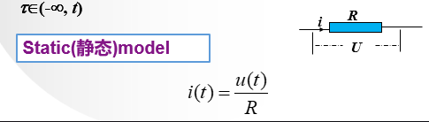
系统
系统分类
-
按给定信号的形式
-
恒值系统
给定信号是一个恒定值（常数），系统的任务是使输出量保持在该给定值附近，抵抗干扰的影响。 典型例子：恒温箱、恒压供水系统、直流稳压电源
-
随动(伺服)系统
给定信号是随时间任意变化的未知函数，系统的任务是使输出量快速、准确地跟随输入信号的变化。 典型例子：雷达天线跟踪目标、数控机床的进给驱动、导弹制导系统
-
程控系统
给定信号按预先设定的程序（如时间顺序、逻辑关系）变化，系统按程序自动完成工作。 典型例子：洗衣机程控、工业机械手的动作序列、电梯楼层控制
-
-
按是否满足叠加原理
-
线性系统
满足叠加原理
系统的数学模型为线性微分方程（或差分方程），可以用传递函数、频率响应等经典方法分析
-
非线性系统
不满足叠加原理，包含死区、饱和、间隙、摩擦等非线性特性。 分析方法更复杂（如相平面法、描述函数法），可能出现极限环、跳跃谐振等特有现象。 典型例子：含有饱和放大器的控制系统、带有摩擦的伺服系统
-
-
按参数是否随时间变化
-
定常系统
系统的参数不随时间变化（在运行过程中保持恒定），其数学模型为常系数微分方程。 这类系统分析简单，传递函数、频率特性等工具可直接应用。 多数工程系统在设计时视为定常系统（如固定参数的电机调速系统）
-
时变系统
系统的参数随时间变化，如飞行器在飞行中质量不断减少、化工过程中反应系数随温度变化等。 数学模型为变系数微分方程，分析与设计比定常系统复杂得多，往往需要自适应控制等方法
-
-
按信号传递的形式
-
连续系统
系统中所有信号均为时间连续（模拟量），用微分方程描述
-
离散系统
系统中一处或多处的信号为脉冲序列或数字量，用差分方程描述。 包括采样控制系统（如计算机控制、数字控制器）和数字控制系统
-
-
按输入输出变量的多少
-
单变量系统
只有一个输入信号和一个输出信号，也称单输入单输出（SISO）系统。 经典控制理论主要处理这类系统，传递函数是其主要工具
-
多变量系统
有多个输入和多个输出（MIMO），各变量之间存在耦合，一个输入的变化往往影响多个输出。 需要用状态空间法、多变量频域法等现代控制理论方法分析。 典型例子：飞机的姿态控制系统（多个舵面输入 → 俯仰、滚转、偏航角输出）、精馏塔的温度与组分控制
-
对控制系统的基本要求
-
稳(基本要求):
给系统一个扰动，他可以稳定下来，如果一直偏移振荡则系统无法实现功能
-
准(稳态要求):
系统响应到达稳态时，输出精度要高
-
快(动态要求):
系统阶跃响应的过渡过程要平稳、快速
线性集总参数方程
在推导简化的数学模型时，常常忽略系统的一些物理特性(比如弹簧质量)，特别是采用线性集总参数数学模型(即常微分方程)，总是忽略一些非线性因素和分布参数(即导致偏微分方程的因素)
它描述的是：一个系统的物理特性（如电阻、电容、质量、弹簧刚度）被认为是“集中”在空间的某一个点上，而不是“分散”在空间各处；并且系统的响应与输入之间成线性关系（即满足齐次性和叠加性）。
集总参数与分布参数:
集总参数:
假设系统的物理尺寸远小于其中传输信号的波长。此时，我们可以忽略电磁波或能量在空间传播的时间延迟。元件的特性（如电阻值）被视为集中在一个点上
例子： 普通的家用电路（如一个RC滤波电路）。我们认为导线只是理想连接线，所有的电阻都集中在那个小小的电阻元件上，所有的电容都集中在那个电容元件上。
数学特征：描述系统的变量（如电压、电流）只是时间t的函数，而不是空间位置的函数。即$ v(t)$，而不是 $v(x,y,z,t)$。因此，方程是常微分方程。
分布参数：
当系统尺寸很大（如很长的输电线路），或信号频率很高时，必须考虑参数在空间上的分布。
数学特征：变量既是时间的函数，也是空间的函数。方程是偏微分方程。
物理系统的微分方程
理想元器件的微分方程
-
电阻: $$ i=\frac{U}{R} $$
-
电容: $$ i=C\frac{dU}{dt} $$
-
电感: $$ U=L\frac{di}{dt} $$
-
物块:
$$ F=M\frac{dv}{dt} $$
-
弹簧: $$ F=k(x_1-x_2) $$
-
节气阀(damper): $$ F=b(v_1-v_2) $$
状态空间模型 State Space Model
两个核心方程:
- 在自动化控制中，状态空间模型通常写成一组一阶微分方程（连续系统）或差分方程（离散系统）。它由两个核心方程组成：
状态方程:
描述系统内部状态是如何被输入和当前状态影响的 $$ \dot x(t)=Ax(t)+Bu(t) $$
输出方程：
描述哪些状态可以被测量到，并作为输出 $$ y(t)=Cx(t)+Du(t) $$
-
具体含义（有点抽象但是之后会专门讲）:
-
$\dot x(t)$：表示对$x(t)$求导
-
$x(t)$: 状态向量,代表系统内部的一组变量（如位置、速度、温度）。这是状态空间模型的核心
-
$u(t)$: 输入向量（控制量）。你施加给系统的信号（如电压、力）
-
$y(t)$：输出向量（观测量）。系统表现出的可测量信号（如转速、位置）。
-
$A$： 系统矩阵(State Matrix)。描述系统内部状态之间如何相互影响（比如速度如何影响位置变化）。
-
$B$： 输入矩阵(Input Marix)。描述输入u如何影响状态的变化。
-
$C$： 输出矩阵(Output Matrix)。描述状态如何映射到输出（通常只读取部分状态）。
-
$D$： 前馈矩阵。描述输入直接跳转到输出的影响（大多数物理系统中没有，通常为0）。
-
-
具体例子:
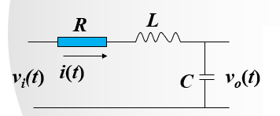
-
对于电阻:$u_R=i(t)R$ 对于电感:$u_L=L\frac{di_L(t)}{dt}$
对于电容:$i(t)=C\frac{du_C(t)}{dt}$ ——①
可以列出方程:
$v_i(t)=i(t)R+L\frac{di(t)}{dt}+v_0(t)$ ——②
将电容表达式的$i(t)$中的$du_C(t)$替换成$v_0(t)$
代入方程得:
$v_i(t)=C\frac{dv_0(t)}{dt}R+CL\frac{dv_0^2(t)}{dt^2}+v_0(t)$
化简得:
$v_i(t)=CL\frac{dv_0^2(t)}{dt^2}+CR\frac{dv_0(t)}{dt}+v_0(t)$
但是这个方程里面有二阶导，我们引入两个状态变量$v_0(t)$和$i(t)$,其实就是将①与②直接化简，使得微分在左侧，得到:
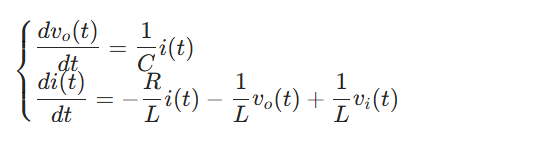
之后就是写成规定的格式了:
首先定义状态向量及其导数 设状态变量为 $v_o(t)$和 $i(t)$，将它们组合成向量 $\mathbf{x}(t)$，其导数自然对应各状态的变化率： $$ \mathbf{x}(t)=\begin{bmatrix}v_o(t)\ i(t)\end{bmatrix},\quad \dot{\mathbf{x}}(t)=\begin{bmatrix}\frac{dv_o}{dt}\[2mm]\frac{di}{dt}\end{bmatrix} $$ 其次提取系数形成系统矩阵A 原始方程： $$ \frac{dv_o}{dt}=0\cdot v_o+\frac{1}{C},i,\quad \frac{di}{dt}=-\frac{1}{L},v_o-\frac{R}{L},i \ 按行提取系数填入矩阵： A=\begin{bmatrix}0 & \frac{1}{C}\[2mm]-\frac{1}{L} & -\frac{R}{L}\end{bmatrix} $$
然后加入输入项（外力） 原方程中 $\frac{di}{dt}$ 包含输入项 $\frac{1}{L}v_i(t)$，因此需在矩阵方程中增加输入矩阵 $b$： $$ b=\begin{bmatrix}0\[2mm]\frac{1}{L}\end{bmatrix},\quad b,v_i(t)=\begin{bmatrix}0\[2mm]\frac{1}{L}v_i(t)\end{bmatrix} $$ 最终组合得到完整的矩阵形式状态方程： $$ \underbrace{\begin{bmatrix}\frac{dv_o}{dt}\\frac{di}{dt}\end{bmatrix}}_{\dot{\mathbf{x}}}
\underbrace{\begin{bmatrix}0&\frac{1}{C}\-\frac{1}{L}&-\frac{R}{L}\end{bmatrix}}{A} \underbrace{\begin{bmatrix}v_o\ i\end{bmatrix}}{\mathbf{x}} + \underbrace{\begin{bmatrix}0\[2mm]\frac{1}{L}\end{bmatrix}}_{b} v_i(t) $$
-
物理系统的线性近似
线性:
满足两个数学原则:
- 齐次性(Homogeneity)：如果输入 $x(t)$ 产生输出$ y(t)$，那么输入$ kx(t)$ 产生输出$ ky(t)$ 。
- 叠加性(superposition)：如果输入 $x_1(t)$产生$y_1(t)$，输入 $x_2(t)$产生$y_2(t)$ ，那么输入$x_1(t)+x_2(t)$产生输出$y_1(t)+y_2(t)$ 。
数学特征：
方程中只包含变量及其各阶导数的一次项，没有平方项、三角函数项或变量相乘项。
-
线性形式： $a_1\frac{dy}{dt}+a_0y=f(t)$
-
非线性形式： $\frac{dy}{dt}+y^2=f(t)$(因为有 $y^2$）
-
对于一般的系统，它通常可以写为: $$ a_n\frac{d^ny}{dt^n}+a_{n-1}\frac{d^{n-1}y}{dt^{n-1}}+…+a_1\frac{dy}{dt}+a_0y=b_m\frac{d^mx}{dt^m}+…+b_0x $$ 其中$y(t)$是输出响应(例如位移、电压)；$x(t)$是输入激励(例如力，电压源)；系数$a_n、b_m$是常数(由电阻R，电感L，质量M等集总参数决定)
线性定常系统和线性时变系统
判断一个线性系统是“定常”还是“时变”，唯一的标准就是：描述该系统的微分方程的系数，是常数，还是时间的函数
线性定常系统(即线性时不变系统 $LTI$)(Time-invariant systems)
除了齐次性和叠加性，还有时不变性 $$ a_n\frac{d^nc(t)}{dt^n}+a_{n-1}\frac{d^{n-1}c(t)}{dt^{n-1}}+…+a_1\frac{dc(t)}{dt}+a_0c(t)=b_m\frac{d^mr(t)}{dt^m}+…+b_0r(t) $$
-
这个$c(t)$和$r(t)$是输入和输出的拼音首字母，分别表示输出和输入
-
两边不能出现输入输出高次项，相乘项，也不能出现常数项
-
线性不线性看变量是否满足上一条；定常不定常看系数是否和时间有关
-
系数都是常数，不是时间 t的函数
-
例子一:
$$ \ddot c(t)+2\dot c(t)c(t)+5=2\dot c(t)r(t) $$
这里面的非线性项有:
- 输入项和一阶导数的乘积
- 常数项 5
- 输入一阶导数和输出的乘积
是非线性定常系统
- 例子二:
$$ \dot c(t)+\cos tc(t)=2r(t) $$
- 都是线性项
- 有时变系数$\cos t$
是线性时变系统
- 例子三:
$$ \dddot c(t)-e^{-t}\dot c^2(t)+6c(t)=tr(t) $$
- 有**非线性量:**一阶导数的平方是高次项
- 系数和时间有关
是非线性时变系统
- 分析工具:
- 传递函数：通过拉普拉斯变换，将复杂的微分方程转化为简单的代数方程 $G(s)=\frac{Y(s)}{U(s)}$
- 频域分析：伯德图、奈奎斯特图。
- 状态空间：如果写成一阶微分方程组的形式，其系统矩阵 A,B,C,D 都是常数矩阵
线性时变系统
$$ a_n(t)\frac{d^ny}{dt^n}+a_{n-1}(t)\frac{d^{n-1}y}{dt^{n-1}}+…+a_1(t)\frac{dy}{dt}+a_0(t)y=b_m(t)\frac{d^mx}{dt^m}+…+b_0(t)x $$
-
系数是时间t的函数
-
齐次性和叠加性，以及时变性
-
分析方法:
状态空间法
非线性特性的线性化
实际上就是以平衡点附近的直线代替工作点(平衡点)附近的曲线
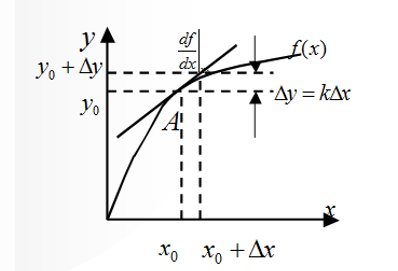
根据泰勒展开: $$ f(x) = f(x_0) + \frac{df}{dx}\bigg|{x_0} \Delta x + \frac{1}{2!} \frac{d^2f}{dx^2}\bigg|{x_0} \Delta x^2 + \dots $$
-
线性化的核心操作（小范围近似）：
-
设定增量：令 $ \Delta y = f(x) - f(x_0) $，$\Delta x = x - x_0$。这表示我们关注的是系统在稳态工作点 $(x_0, f(x_0))$ 附近的变化。
-
忽略高阶项：如果 $ \Delta x $ 非常小（即系统只在平衡点附近轻微波动），那么 $ \Delta x^2 $等高次项的值会极其微小，可以忽略不计。
-
得到线性关系：经过上述近似，原复杂的非线性函数变成了： $$ \Delta y \approx \frac{df}{dx}\bigg|_{x_0} \Delta x $$
-
-
结论：令该点的斜率 $k = \frac{df}{dx}\big|_{x_0} $，则在这一小段范围内，输入和输出的关系变成了简单的正比关系：$\Delta y = k \Delta x $，或者写作 $ y = kx $（这里的 ( $x, y $ 指的是增量）
用拉普拉斯变换解决线性定常系统
用拉普拉斯变换处理问题的步骤
- 首先，在这个部分我不会写拉普拉斯变换的原理和数学推导，这部分是详细讲拉普拉斯变换作为一个微分方程的求解工具的使用方法
- 其次，具体的数学推导在下一个并列板块，可以去查看
解题步骤包括一下几步：
-
写出微分方程
-
确定微分方程是描述线性定常系统的(具体可以参考前面的物理系统的线性近似部分LTI系统)
-
正向变换(将时域转化为频域):
比如$f(t)=5e^{-2t}$,那么**通过查表(其实是记住这种常见表达的转化式)**可知$e^{at}$对应$\frac{1}{s-a}$,那么此处$5e^{-2t}$就可以转化成$\frac{5}{s+2}$
-
在频域中处理:
我们通过拉普拉斯变化得到了$F(s)$,接下来就是通过代入解代数方程来得到频域表达式$Y(S)$,假设是$\frac{5}{s(s+2)(s+3)}$
-
逆向变化（将频域转化成时域）:
现在将$\frac{5}{s(s+2)(s+3)}$变回$y(t)$
先展开成简单分式(便于带公式): $$ \frac{5}{s(s+2)(s+3)}=\frac{A}{s}+\frac{B}{s+2}+\frac{C}{s+3} $$ 解出ABC之后查表（其实是带公式）:
- $\frac{A}{s}$对应$A·u(t)$
- $\frac{B}{s+2}$对应$B·e^{-2t}$
- $\frac{C}{s+3}$对应$C·e^{-3t}$
把他们代入就可以得到时域表达式$y(t)$
常用变化:
拉普拉斯变换常用性质
| 性质名称 | 时域 $f(t)$ | 复频域 $F(s)$ | 使用场景 |
|---|---|---|---|
| 线性 | $af(t) + bg(t)$ | $aF(s) + bG(s)$ | 处理信号的叠加 |
| 时域微分 | $f’(t)$ | $sF(s) - f(0^-)$ | 解微分方程的核心 |
| 时域积分 | $\int_0^t f(\tau)d\tau$ | $\frac{F(s)}{s}$ | 处理积分环节 |
| 频域微分 | $t f(t)$ | $-\frac{dF(s)}{ds}$ | 处理乘以 $t$ 的情况 |
| 时移 | $f(t - a)u(t - a)$ | $e^{-as}F(s)$ | 处理延迟、延时环节 |
| 频移 | $e^{at}f(t)$ | $F(s - a)$ | 处理指数调制信号 |
| 卷积 | $f(t) * g(t)$ | $F(s) G(s)$ | 系统分析、求零状态响应 |
-
线性性质 linearity: $$ L[k_1f_1±k_2f_2]=k_1F_1(s)±k_2F_2(s) $$
-
微分性质 Differentiation: $$ L[\frac{d^kf(t)}{dt^k}]=s^kF(s)-s^{k-1}f(0)-s^{k-2}f’(0)…f^{(k-1)}(0) $$
- $f(0^-)$、$f’(0^-)$…… 是函数及其各阶导数在 $0^-$ 时刻（时间零点左侧）的值，也就是初始条件
也就是说，如果初始条件是0，那么有以下的简化表达 $$ L[\frac{dx(t)}{dt}]=sX(s)\ L[\frac{d^2x(t)}{dt^2}]=s^2X(s)\ L[\frac{d^nx(t)}{dt^n}]=s^nX(s)\ $$
-
Complex Differentiation: $$ L[tf(t)]=-\frac{d}{ds}F(s) $$
-
卷积 Convolution Integration: $$ f_1(t)*f_2(t)=\int_0^tf_1(t-\tau)·f_2(\tau)d\tau\ L[f_1(t)*f_2(t)]=F_1(s)·F_2(s) $$
-
积分 Integration: $$ If: x^{-1}(0)=x^{-2}(0)=x^{-3}(0)=…=0\ L[\iint…\int x(t)dt]=\frac{1}{s^n}X(s) $$
-
时移: $$ L[f(t-a)u(t-a)]=e^{-as}F(s) $$
-
Complex Shifting: $$ L[e^{\mp at}f(t)]=F(s\mp a) $$
-
Initial-Value Theorem 初值定理: $$ \displaystyle\lim_{x→0}f(t)=\displaystyle\lim_{s→\infty}sF(s) $$
-
Final-Value Theorem 终值定理: $$ \displaystyle \lim_{t→\infty}f(t)=\displaystyle\lim_{s→0}sF(s) $$
初值定理和终值定理的使用条件:
$sF(s)$在s平面的虚轴上以及右半平面内没有极点
常用拉普拉斯变换对
假设信号在 $t < 0$ 时为零，$u(t)$ 表示单位阶跃函数，$n$ 为正整数。
| 时域 $f(t)$ （$t \ge 0$） | 复频域 $F(s)$ | 备注/收敛域 |
|---|---|---|
| 单位冲激 $\delta(t)$ | $1$ | 所有 $s$ |
| 单位阶跃 $u(t)$ | $\frac{1}{s}$ | $\text{Re}(s) > 0$ |
| 斜坡函数 $t$ | $\frac{1}{s^2}$ | $\text{Re}(s) > 0$ |
| 幂函数 $t^n$ | $\frac{n!}{s^{n+1}}$ | $\text{Re}(s) > 0$ |
| 指数衰减 $e^{-at}$ | $\frac{1}{s + a}$ | $\text{Re}(s) > -a$ |
| 指数增长 $e^{at}$ | $\frac{1}{s - a}$ | $\text{Re}(s) > a$ |
| 正弦 $\sin(\omega t)$ | $\frac{\omega}{s^2 + \omega^2}$ | $\text{Re}(s) > 0$ |
| 余弦 $\cos(\omega t)$ | $\frac{s}{s^2 + \omega^2}$ | $\text{Re}(s) > 0$ |
| 双曲正弦 $\sinh(at)$ | $\frac{a}{s^2 - a^2}$ | $\text{Re}(s) > |a|$ |
| 双曲余弦 $\cosh(at)$ | $\frac{s}{s^2 - a^2}$ | $\text{Re}(s) > |a|$ |
| 衰减正弦 $e^{-at}\sin(\omega t)$ | $\frac{\omega}{(s+a)^2 + \omega^2}$ | $\text{Re}(s) > -a$ |
| 衰减余弦 $e^{-at}\cos(\omega t)$ | $\frac{s + a}{(s+a)^2 + \omega^2}$ | $\text{Re}(s) > -a$ |
| 乘以时间的指数 $t e^{-at}$ | $\frac{1}{(s + a)^2}$ | $\text{Re}(s) > -a$ |
| 乘以时间的正弦 $t \sin(\omega t)$ | $\frac{2\omega s}{(s^2 + \omega^2)^2}$ | $\text{Re}(s) > 0$ |
| 乘以时间的余弦 $t \cos(\omega t)$ | $\frac{s^2 - \omega^2}{(s^2 + \omega^2)^2}$ | $\text{Re}(s) > 0$ |
$$ L[u(t)]=\frac{1}{s}\ L[t^n]=\frac{n!}{s^{n+1}}\ L[e^{-at}]=\frac{1}{s+a}\ L[\sin wt]=\frac{w}{s^2+w^2}\ L[\cos wt]=\frac{s}{s^2+w^2} $$
反变换
- 我们一般不使用反变换公式(因为很复杂)，可以参考以下方式:
Partial Fractional Expansion 部分分式法
$$ X(s)=\frac{N(s)}{D(s)} $$
-
满足以下条件:
- 真分式，且系数都是实数
- 分母可以分解为$(s-p_1)(s-p_2)(s-p_3)$
-
进行以下操作因式分解:
-
首先确定极点和极点类型
单实根: $$ s=a;对应部分分式\frac{A}{s-a} $$ r重实根: $$ s=a(但是r重)；对应部分分式\frac{A_1}{s-a}+\frac{A_2}{(s-a)^2}+…+\frac{A_r}{(s-a)^r} $$ 共轭复根: $$ s=\alpha\pm jw;对应部分分式\frac{Bs+C}{(s-\alpha)^2+w^2} $$
-
之后进行待定系数法，确定系数
-
进行拉普拉斯反变换:
实际上是记住特殊的几个然后带公式 $$ L^{-1} {\frac{1}{s-a}}=e^{at}u(t)\ L^{-1}{\frac{1}{(s-a)^2}}=te^{at}u(t)\ L^{-1}{\frac{w}{(s-\alpha)^2+w^2}}=e^{\alpha t}\sin(wt)u(t)\ L^{-1}{\frac{s-\alpha}{(s-\alpha)^2+w^2}}=e^{\alpha t}\cos(wt)u(t) $$
-
例题
-
例一: $$ X(s)=\frac{s+3}{s^2+3s+2} $$ 第一步，因式分解: $$ X(s)=\frac{A}{s+1}+\frac{B}{s+3} $$ 第二步，求出待定系数 $$ A=2\ B=-1 $$
$$ X(s)=\frac{2}{s+1}-\frac{1}{s+3} $$
第三步，反变换 $$ x(t)=2e^{-t}u(t)-e^{-2t}u(t) $$
-
例二:
如果遇到分母$s^2+bs+c$在实数域不可分解，通常保留为二次项，并配成$(s+a)^2+w^2$的形式，然后拆成$\frac{As+B}{(s+a)^2+w^2}$，然后利用正余弦反变换公式求解： $$ \frac{s}{s^2+2s+5} $$ 第一步，分母拆成$\frac{As+B}{(s+a)^2+w^2}$的形式: $$ \frac{s}{s^2+2s+5}=\frac{s}{(s+1)^2+4}=\frac{s+1}{(s+1)^2+4}-\frac{1}{2}·\frac{2}{(s+1)^2+4} $$ 第二步，利用拉普拉斯正余弦反变换 $$ \frac{s+1}{(s+1)^2+4}→e^{-t}\cos(2t)\ \frac{2}{(s+1)^2+4}→e^{-t}\sin(2t) $$
拉普拉斯变换的原理(如果是复习准备考试可以跳过，会用就行)
首先，我们可以用微分方程来描述一个系统，微分方程的解表示了系统的性质，但是微分方程的求解比较复杂
拉普拉斯变换可以将时域映射到复频域，将微分方程转化为代数方程，从而简化求解过程
实现原理如下:
$e^{-st}$
我们已知时域上的方程是$f(t)$,我们需要转化成频域上的$F(s)$,利用的拉普拉斯变换公式为: $$ F(s)=\int_0^\infty f(t)e^{-st}dt $$ 其中这个$e^{-st}$非常关键，它的作用类似于探针，去探查有没有满足条件的频域信号，具体实现过程如下:
$e^{-st}$可以拆分成两个部分: $$ e^{-st}=e^{-(\sigma+jw)t}=e^{-\sigma}·e^{-jwt} $$
-
第一部分$e^{-\sigma}$是实函数，只影响信号$f(t)$的大小
-
如果$\sigma >0$,根据函数图像可知，$e^{-\sigma t}$随着t的增大衰减很快，越往后的时间节点的值对积分的结果影响越小
-
如果$\sigma <0$,根据函数图像可知，$e^{-\sigma t}$随着t的增大而增大，越往后的时间节点的值对积分的结果影响越大
-
由此可见，它的作用是为信号在不同时间点的重要性进行加权。通过选择不同的 σ，我们可以聚焦于信号的早期行为或后期行为
-
-
第二部分$e^{-jwt}$,是一个复函数，能够筛选匹配频率的信号，具体实现如下:
只有当我们所用的探测频率 ω 与信号本身的频率 ω0 完全相等时，两者的乘积积分才会产生一个“巨大”的结果，否则积分会趋于零
首先，用欧拉公式写成如下形式: $$ e^{-jwt}=\cos(wt)-j\sin(wt) $$ 根据性质，不同频率的正弦/余弦函数在无限区间上的内积为0：
-
内积:
在数学上，我们可以把两个函数 $f(t)$ 和 $g(t)$ 在无限区间上的积分 $\int _{-\infty}^{\infty}f(t)g(t)dt$看作是一种内积。如果这个内积为零，我们就说这两个函数是正交的
正交: $$ \int _{-\infty}^{\infty}f(t)g(t)dt=0 $$
-
说人话：
只要是频率不一样的正弦和余弦（无论怎么混乘），它们在无穷区间上的“内积”通常都为0(记住就行，证明可以根据不同组合依次证明，其中可能出现振荡的情况，在分布意义下等于0)
-
$$ w_1≠w_2时\ \int_{-\infty}^{\infty}\cos(w_1)\cos(w_2)dt=0\ \int_{-\infty}^{\infty}\cos(w_1)\sin(w_2)dt=0\ \int_{-\infty}^{\infty}\sin(w_1)\sin(w_2)dt=0\ 当频率相同时:\ \int_{-\infty}^{\infty}\sin(w)\cos(w)dt=0\ $$ 所以如果是这样内积的话，只有频率相同的正弦和正弦彼此相乘或者频率相同的余弦和余弦彼此相乘的内积才不为0
那么，这个探针的作用就可以通过这个性质筛选出特定频率的信号，举例如下:
对于任意一个频率为$w_0$的正弦波$A\cos(w_0t+\phi)$,它可以分解为: $$ A\cos(w_0t+\phi)=A\cos\phi·\cos(w_0t)-A\sin\phi·\sin(w_0) $$ 其中$A\cos\phi$和$A\sin\phi$都是系数(常数)，主要关注后面接的部分:
同时:
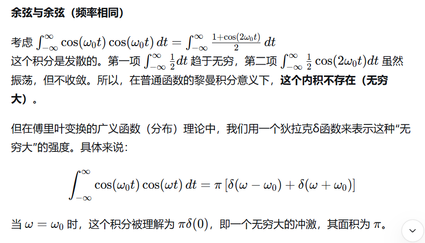
同理正弦
所以最后的结果是: $$ F(w_0)=\pi A(\cos\phi+j\sin\phi) $$ 这里我们可以清楚的看到，在拉普拉斯变换之后的$F(s)$上，我们依旧可以通过取模求得原时域信号的幅度、辐角
零输入响应和零状态响应
零输入响应 Zero input response
- 条件:外部输入信号为零($u_r(t)=0$)，即没有外部激励
- 初始条件：不为零。系统内部储存了能量（比如电路里电容的初始电压、电感的初始电流，或者物理系统中弹簧的初始形变、物体的初始速度等）
- 系统靠外在能源工作，只是在“消耗”自己一开始就有的能量
零状态响应 Zero state response
- 条件:初始状态为零（系统一开始是“静止”或“松弛”的，所有储能元件都没有初始能量）
- 响应:完全由外部输入信号（$u_r(t)$）引起的输出。它反映了系统对特定输入信号的响应特性，同样也包含了系统本身的特性
- 系统“从零开始”，完全由外部信号驱动工作
全响应 :
对于一个线性时不变系统，系统的全响应(实际输出)可以分解为: $$ 全响应=零输入响应+零状态响应 $$ 可以用一个简单的RC电路来类比理解：
- 零输入响应：电容一开始有电压 V0，然后把输入端短路（输入为0）。你会看到电容通过电阻放电，电压从 V0 逐渐衰减到0。这个过程就是零输入响应。
- 零状态响应：电容初始电压为0，然后在输入端接入一个直流电压源 Vs。你会看到电容电压从0逐渐上升，最终稳定在 Vs。这个过程就是零状态响应。
- 全响应：如果电容一开始有电压 V0，同时输入端又接入了电压源 Vs，那么电容电压的变化曲线，恰好就是上面两个曲线的叠加。
线性系统的传递函数
The Transfer Function of Linear Systems
定义:
零初始条件下，输出变量的拉氏变换与输入变量的拉氏变换之比
-
数学表达式: $$ G(s)=\frac{U_o(s)}{U_r(s)}|_{零初始条件} $$
- $U_o(s)$:输出变量$u_o(t)$的拉普拉斯变换
- $U_r(s)$:输入变量$u_r(s)$的拉普拉斯变换
- **零初始条件:**系统在 $t=0^-$ 时刻，所有储能元件的初始状态均为零（电容电压为零、电感电流为零等）
初始条件为零，一般是输入量在 t=0 时刻以后才作用于系统，系统的输入量和输出量及其各阶导数在t≤0时的值也均为零。现实的控制系统多属于这种情况。在研究一个系统时，通常总是假定该系统原来处于稳定平衡状态，若不加输入量，系统就不会发生任何变化。系统中的各个变量都可用输入量作用前的稳定值作为起算点，因此，一般都能满足零初始条件
-
输入与输出之间的关系仅取决于电路的结构形式及其参数（固有特性） 。无论输入如何，系统都以相同的传递作用输出信息或能量，因此称之为传递函数
:首一标准型、尾一标志性、增益
有首一标准型、尾一标志性，其中首一表示把第一项的系数化为一，尾一表示把最后一项(不一定是常数项)化为1(或者-1)要保证第一项系数是正的，$K$为增益(s=0时传递函数的值），举例如下:
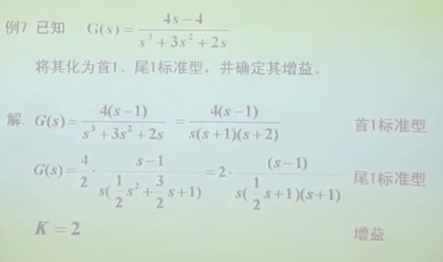
特征根&模态
特征根:
-
定义:
是分母多项式的根，它们决定了系统自由响应的形式，也称为系统的极点。
模态:
-
定义:
模态是指由每个特征根所对应的时域响应分量。对于单根 s=λ，其模态为$e^{\lambda t}$；对于重根，会附加$t^k$因子；对于共轭复根，模态为正弦、余弦与指数衰减的乘积
-
举例:
如果特征根是$s=-1、s=-4$，那么模态为$e^{-t}、e^{-4t}$
物理意义：
传递函数 G(s)是系统固有属性的数学表达：
- 它包含了系统的结构、参数、微分方程的系数等信息
- 与输入信号的形式无关，也与初始状态无关
- 一旦系统确定，传递函数就唯一确定（在定义域内）
因此，传递函数是描述线性时不变系统（LTI系统）最常用的模型之一
从微分方程到传递函数:
以一个二阶系统为例： $$ a_2 \ddot{u}_o(t) + a_1 \dot{u}_o(t) + a_0 u_o(t) = b_0 u_r(t) $$ 在零初始条件下，对两边作拉普拉斯变换: $$ a_2s^2U_o(s)+a_1sU_o(s)+a_0U_o(s)=b_0U_r(s) $$ 整理得: $$ (a_2s^2+a_1s+a_0)U_0(s)=b_0U_r(s) $$
于是传递函数为: $$ G(s)=\frac{U_o(s)}{U_r(s)}=\frac{b_0}{a_2s^2+a_1s+a_0} $$ 可以看到，传递函数的分母就是微分方程左边的特征多项式，分子来自输入项的系数
分母的根是极点；分子的根是零点
注意，传递函数本质上是复函数，因为是关于复数s的函数
传递函数的用途
一旦有了传递函数，就可以：
- 分析稳定性：看分母多项式（特征方程）的根是否都在复平面左半平面
- 求零状态响应：对于任意输入 $u_r(t)$，有 $U_o(s)=G(s)⋅Ur(s)$，然后拉普拉斯逆变换得到 $u_o(t)$
- 分析频率响应：令 s=jω，得到系统对不同频率正弦输入的幅值增益和相位偏移
- 建立方框图模型：用传递函数表示各个模块，进行系统互联分析（串联、并联、反馈等）
- 应用梅森公式：对于复杂信号流图，直接求出总传递函数
典型环节及其传递函数
Typical elements and their transfer functions
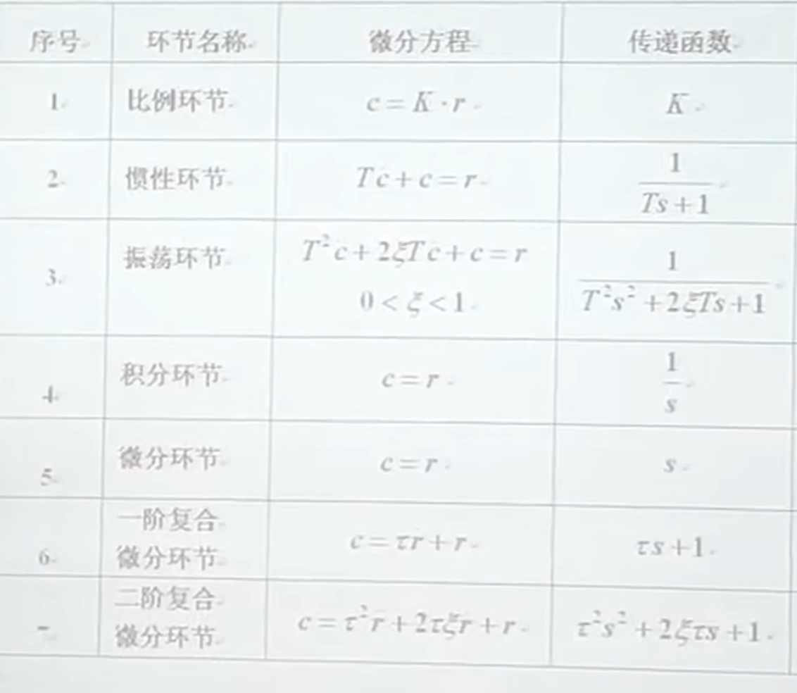
比例环节 Proportional element
-
比例环节的输入输出关系是成比例的，没有积分、微分或延迟。
-
时域方程: $$ c(t)=K·r(t) $$ 其中$r(t)$为输入，$c(t)$为输出，$K$为比例系数(增益)
-
传递函数: $$ G(s)=\frac{C(s)}{R(s)}=K $$
-
拉普拉斯域关系: $$ C(s)=K·R(s) $$
-
比例环节意味着输出信号瞬时、无失真地跟随输入信号，仅改变信号的幅值（放大或缩小）
-
具体例子:
在电路当中，运算放大器比例电路；机械传动中的齿轮箱（转速比恒定）；杠杆机构（力或位移的放大）
-
特性:
对任意输入信号，输出波形与输入波形完全相同，仅在幅值上缩放。
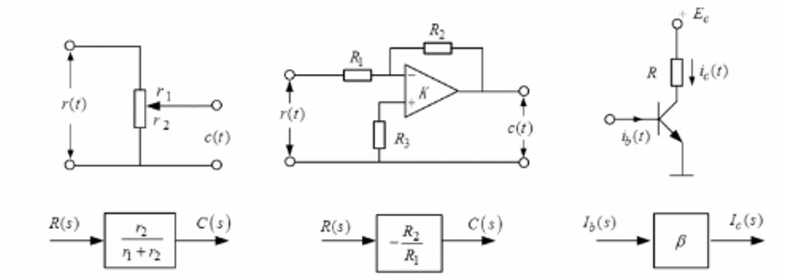
惯性环节 Inertial element
-
数学模型: $$ T\frac{dc(t)}{dt}+c(t)=r(t) $$
-
$r(t):$输入
-
$c(t):$输出
-
传递函数: $$ G(s)=\frac{C(s)}{R(s)}=\frac{1}{Ts+1} $$
-
-
物理模型:RC低通滤波电路
根据基尔霍夫定律: $$ RC\frac{du_c}{dt}+u_c=U_r $$ 对比标准形式，时间常数$T=RC$,传递函数$G(s)=\frac{1}{RCs+1}$
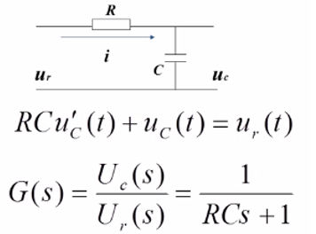
-
阶跃响应
当输入为单位阶跃$r(t)=\epsilon(t)$时，零状态响应为: $$ c(t)=1-e^{-\frac{t}{T}},t≥0 $$ 推导过程见下:
因为输入了单位阶跃，所以$t≥0时r(t)=1$，原微分方程变为: $$ T\frac{dc(t)}{dt}+c(t)=1,t≥0 $$ 接下来就是利用拉普拉斯变换解微分方程了:
已知传递函数$G(s)=\frac{1}{Ts+1}$,那么零状态响应为: $$ C(s)=G(s)·R(s)\而R(s)为零状态输入的拉普拉斯变换，即单位阶跃的拉普拉斯变换:R(s)=\frac{1}{s}\ C(s)=\frac{1}{Ts+1}·\frac{1}{s}\ 进行分式展开: C(s)=\frac{A}{s}+\frac{B}{Ts+1}\ 待定系数法求出 A和B C(s)=\frac{1}{s}-\frac{1}{Ts+1}\ 根据拉普拉斯逆变换: c(t)=\epsilon (t)-e^{-\frac{t}{T}}\epsilon (t)\ 于是: c(t)=\epsilon(t)(1-e^{-\frac{t}{T}})\ 通常省略\epsilon(t),默认t≥0时有效\ 即：\ c(t)=1-e^{-\frac{t}{T}},t≥0 $$
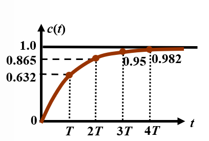
积分环节 Integration element
数学模型(零初始状态):
$$ c(t)=\frac{1}{T}\int_0^t r(\tau)d\tau $$
$$ G(s)=\frac{C(s)}{R(s)}=\frac{1}{Ts}\即:C(s)=\frac{1}{T}·\frac{R(s)}{s} $$
物理背景
- 运放积分器：输入经电阻，反馈回路用电容，输出电压与输入电压的积分成比例。
- RC 积分电路（近似）：当时间常数远大于输入信号周期时，电容两端电压近似为输入电压的积分（但实际是惯性环节，不是理想积分）
时域响应
-
阶跃响应:
设输入为单位阶跃$r(t)=\epsilon (t)$则: $$ c(t)=\frac{1}{T}\int_0^t 1d\tau=\frac{t}{T} $$
- 如果输入突然变为零，积分过程停止，输出值会保持在中断时刻的值不变。
- 这意味着积分环节能够“记住”过去的输入累积效应，适合用于需要累积或记忆功能的场合（如控制系统的积分控制器、累计计数器等）。
频率特性
令$s=jw$: $$ G(jw)=\frac{1}{Tjw}=-\frac{j}{Tw} $$
-
幅频特性： $$ |G（jw)|=\frac{1}{Tw} $$
低频时增益无穷大（直流增益无穷），高频时增益衰减。
微分环节 Differential element
数学模型:
-
时域方程: $$ c(t)=T\frac{dr(t)}{dt} $$
-
传递函数: $$ G(s)=\frac{C(s)}{R(s)}=Ts $$ 即输出等于输入乘以 ss，是一个一阶微分算子。
-
时域特性:
-
阶跃响应:
当输入单位阶跃$r(t)=\epsilon (t)$,其导数是单位冲激$\delta (t)$,因此: $$ c(t)=T·\delta (t) $$ 输出是一个冲激函数（幅值为 $T$ 的无穷大脉冲，宽度为零）
理想微分环节对阶跃输入的响应是冲激
-
-
频率特性:
令$s=jw$: $$ G(jw)=jwT $$
- 幅频特性： $$ |G(jw)|=wT $$ 高频增益无穷大，会放大高频噪声
-
局限性:
- 理想微分环节的传递函数 Ts分子次数高于分母，不是物理可实现的（高频增益趋于无穷）。
- 实际物理系统总存在惯性（如电阻、电感、质量等），高频下增益会下降
总结几种环节
| 环节 | 传递函数 | 阶跃响应 | 相频 | 作用 |
|---|---|---|---|---|
| 比例 | $K$ | 比例跟随 | $0^\circ$ | 调节增益 |
| 积分 | $\frac{1}{Ts}$ | 斜坡 | $-90^\circ$ | 消除稳态误差 |
| 惯性 | $\frac{1}{Ts+1}$ | 指数上升 | $-90^\circ$ 最大 | 描述能量储存 |
| 理想微分 | $Ts$ | 冲激 | $+90^\circ$ | 预测变化率 |
| 实际微分 | $\frac{T_1 s}{T_2 s+1}$ | 尖脉冲后衰减 | 超前网络 | 改善动态 |
二阶振荡环节
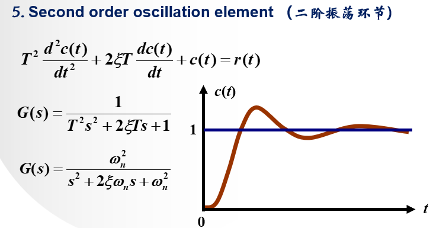
滞后环节
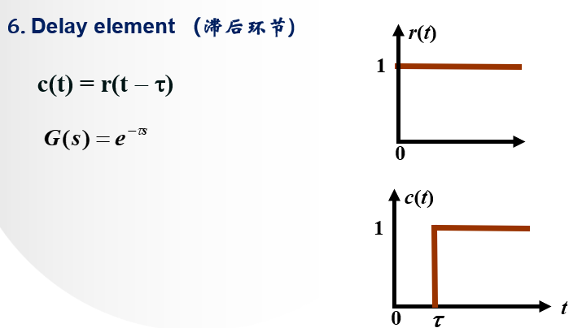
比例微分环节
$$ G(s)=Ts+1 $$
二阶微分环节
$$ G(s)=T^2s^2+2\xi Ts+1 $$
环节和传递方程的关系
复杂传递函数可以分解成典型环节的乘积，以及静态增益
- 分解形式
任何有理分式传递函数均可因式分解为典型环节的乘积：
$$ G(s) = K \cdot \frac{(\tau_1 s + 1)(\tau_2^2 s^2 + 2\zeta \tau_2 s + 1)\cdots}{(T_1 s + 1)(T_2^2 s^2 + 2\zeta T_2 s + 1)\cdots} $$
其中：
- $K$ 为增益；
- $(\tau s + 1)$ 为一阶微分环节；
- $\frac{1}{T s + 1}$ 为惯性环节；
- $(\tau^2 s^2 + 2\zeta \tau s + 1)$ 为二阶微分环节；
- $\frac{1}{T^2 s^2 + 2\zeta T s + 1}$ 为振荡环节。
- 静态增益（直流增益）
将 $s=0$ 代入传递函数，得到静态增益：
$$ G(s)\big|_{s=0} = \frac{b_m}{a_n} = K $$
该值表示系统对直流（阶跃）信号的稳态放大倍数，即 $t \to \infty$ 时输出与输入幅值之比。
-
总结
-
任何有理分式传递函数都可以写成比例环节 × 一阶环节（微分/惯性）× 二阶环节（振荡/二阶微分） 的乘积形式。
-
这种分解对应着系统的串联分解，每个典型环节都有明确的物理意义和频率特性。
-
分解中提取的常数 KK 就是静态增益，等于 s=0 时的传递函数值
-
从状态空间模型推传递函数
对于一个单输入单输出（SISO）线性时不变系统，状态空间描述为: $$ \dot x=Ax+bu\ y=c^Tx+du $$
- x：n维状态向量
- u：标量输入
- y：标量输出
- A：n×n系统矩阵
- b：n×1 输入矩阵
- $c^T$：1×n 输出矩阵（行向量）
- d：标量直接传输项（前馈）
状态方程：
$$
\dot{x} = Ax + bu
$$
变换后：
$$
sX(s) = AX(s) + bU(s)
$$
输出方程：
$$
y = c^T x + du
$$
变换后：
$$
Y(s) = c^T X(s) + dU(s)
$$
先求解$X(s)$然后带入$Y(s)$
$$
sX(s) - AX(s) = bU(s)
$$
$$ (sI - A)X(s) = bU(s) $$
$$ X(s) = (sI - A)^{-1} b U(s) $$
$$ Y(s) = c^T (sI - A)^{-1} b U(s) + d U(s) $$
$$ Y(s) = \left[ c^T (sI - A)^{-1} b + d \right] U(s) $$
那么传递函数: $$ G(s) = \frac{Y(s)}{U(s)} = c^T (sI - A)^{-1} b + d $$ 将状态空间模型 $(A, b, c^T, d)$ 用一个分块矩阵紧凑表示： $$ G(s) \stackrel{\text{SSR}}{=} \left[ \begin{array}{c|c} A & b \ \hline c^T & d \end{array} \right] $$ 其中：
- $A$ 是系统矩阵（$n \times n$）；
- $b$ 是输入矩阵（$n \times 1$）；
- $c^T$ 是输出矩阵（$1 \times n$）；
- $d$ 是直接传输项（标量）。
能控标准型（Controllable Canonical Form）构造
- 这里假设传递函数是严格真有理分式（分子阶次 m 小于分母阶次 n），并且分母是首一多项式（最高次项系数为 1）：
$$ G(s)=\frac{Y(s)}{U(s)}=\frac{b_ms^m+b_{m-1}s^{m-1}+…+b_1s+b_0}{s^n+a_{n-1}s^{n-1}+…+a_1s+a_0} $$
- 分母次数 n称为系统的阶数。
- 分子次数 m≤n（如果 m=n，通常先通过长除法分离出常数项 d，变成严格真分式）。
-
这里要设定$b_{m+1}=b_{m+2}=…=b_n=0$
在实际构造状态空间模型时，通常希望将分子多项式的系数统一处理为长度为 n的向量。即使分子阶次 m<n，我们也可以通过补零的方式将分子系数扩充到 n 维 $$ A_c = \begin{bmatrix} 0 & 1 & 0 & \cdots & 0 \ 0 & 0 & 1 & \cdots & 0 \ \vdots & \vdots & \vdots & \ddots & \vdots \ 0 & 0 & 0 & \cdots & 1 \ -a_0 & -a_1 & -a_2 & \cdots & -a_{n-1} \end{bmatrix} $$
$$ b_c = \begin{bmatrix} 0 \ 0 \ \vdots \ 0 \ 1 \end{bmatrix} $$
$$ c_c^T = \begin{bmatrix} b_0 & b_1 & \cdots & \cdots & b_n \end{bmatrix} $$
-
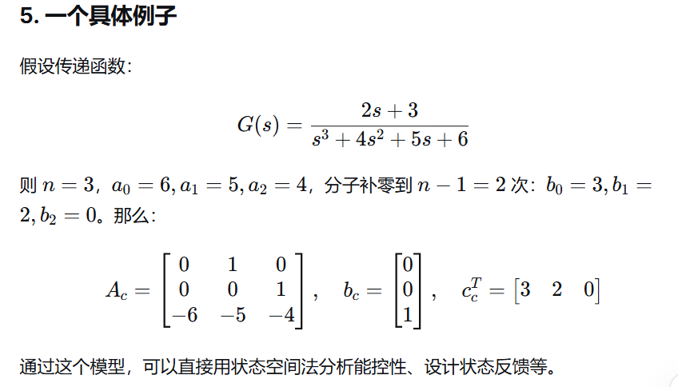
注意点:
- 传递方程仅仅适用于LTI系统，也就是线性时不变系统
- 传递方程只和系统结构和参数有关
- 是真有理分式
- 只能用于SISO系统(单输入单输出 Single Input Single Output)
- 只能分析零初始条件的系统，所以无法直接用于求全响应(因为全响应要包括零输入响应)
- 只能反映输入输出的关系，不涉及中间变量
- 传递函数和冲激响应构成一对拉普拉斯变换对
一些例题
已知某系统在0初条件下的单位阶跃响应为：
$$ c(t) = 1 - \frac{2}{3} e^{-t} - \frac{1}{3} e^{-4t} $$
试求：
- 系统的传递函数；
- 系统的增益；
- 系统的特征根及相应的模态；
- 求系统的单位脉冲响应；
- 求系统微分方程；
- 当 $c(0) = -1$，$c’(0) = 0$；$r(t) = 1(t)$ 时，求系统的响应。
step 1:
因为$c(t) = 1 - \frac{2}{3} e^{-t} - \frac{1}{3} e^{-4t}$，又因为传递函数的定义式: $$ G(s)=\frac{L(输入)}{L(输出)} $$ 现在输出已经知道了时域表达式，那么求出它的频域表达式以及输入的频域表达式就行:
根据拉普拉斯变换，输出的表达式为: $$ C(s)=\frac{1}{s}-\frac{2}{3}·\frac{1}{s+1}-\frac{1}{3}·\frac{1}{s+4}=\frac{2(s+2)}{s(s+1)(s+4)} $$ 输入的拉普拉斯变换是$\frac{1}{s}$
所以传递函数表达式为: $$ G(s)=\frac{C(s)}{R(s)}=s·C(s)=\frac{2(s+2)}{(s+1)(s+4)} $$ step 2:
增益通常指的是静态增益（直流增益），即 s=0时的值： $$ K=G(0)=\frac{2×(0+2)}{(0+1)(0+4)}=1 $$ step 3:
特征根即让分母为0: $$ \lambda_1=-1;\lambda_2=-4 $$ 模态则是: $$ e^{-t}和e^{-4t} $$
step 4:
利用传递函数的性质——传递函数和冲激响应构成一对拉普拉斯变换对
$$
g(t) = \mathcal{L}^{-1}[G(s)]=\frac{2}{3} e^{-t} + \frac{4}{3} e^{-4t}, \quad t \ge 0
$$
step 5:
$$
\frac{2s+4}{s^2+5s+4}=\frac{C(s)}{R(s)}
$$
交叉相乘可以得到:
$$
(2s+4)R(s)=(s^2+5s+4)C(s)
$$
然后做拉普拉斯反变换:
$$
\ddot c+5\dot c+4c=2\dot r+4r
$$
这个就是微分方程
此时因为不再是零初始条件，所以拉普拉斯变换公式为: $$ L(\ddot f)=s^2F(s)-sf(0^-)-\dot f(0^-) $$ 左右两边变换完之后: $$ \mathcal{L}{\ddot{c} + 5\dot{c} + 4c} = \left[ s^2C(s) - sc(0) - \dot{c}(0) \right] + 5\left[ sC(s) - c(0) \right] + 4C(s) $$
$$ \mathcal{L}{2\dot{r} + 4r} = 2\left[ sR(s) - r(0) \right] + 4R(s) $$
移项得：
$$ (s^2 + 5s + 4)C(s) = 2(s + 2)R(s) + (s + 5)c(0) + \dot{c}(0) $$
代入 $c(0) = -1, \dot{c}(0) = 0, R(s) = \frac{1}{s}$:
$$ C(s) = \frac{2(s + 2)}{s^2 + 5s + 4} \cdot \frac{1}{s} + \frac{(s + 5)(-1)}{s^2 + 5s + 4} $$ 这个式子前半部分就是给的$c(t)$,只需要处理后半部分: $$ C_0(s)=\frac{-3}{4}·\frac{1}{s+1}+\frac{1}{3}·\frac{1}{s+4} $$ 拉普拉斯反变换为: $$ -\frac{4}{3}e^{-t}+\frac{1}{3}e^{-4t} $$ 两者合并之后: $$ c(t)=1-2e^{-t} $$
框图模型
控制的三大类
在控制系统中，按控制方式可分为开环控制、闭环控制和复合控制
开环控制
定义 ： 系统的输出量不参与控制作用，控制器只根据输入信号（给定值）产生控制信号，对被控对象进行单向控制。
结构特点 :
- 信号流是单向的：输入 → 控制器 → 被控对象 → 输出
- 没有测量输出并反馈回去的环节
传递函数表示 : 若控制器传递函数为 $G_c(s)$，被控对象为 $G_p(s)$，则系统开环传递函数（也是总传递函数）为： $$ \frac{Y(s)}{R(s)} = G_c(s) G_p(s) $$ 优点
- 结构简单，成本低，易于实现
- 不存在稳定性问题
- 适用于输入信号已知、干扰较小且对控制精度要求不高的场合
缺点
- 抗干扰能力差，输出一旦偏离期望值无法自动修正
- 控制精度完全取决于元器件的标定和外界条件的变化
典型应用 洗衣机定时控制、普通电饭煲、步进电机开环定位等。
闭环控制
定义
系统的输出量通过测量反馈到输入端，与给定值进行比较，利用偏差进行控制，形成闭合环路。
结构特点
- 包含前向通路和反馈通路
- 信号流呈闭环结构，偏差信号 $E(s) = R(s) - B(s)$
- 常见负反馈，也可为正反馈（但通常用负反馈实现稳定控制）
传递函数表示
设前向通路传递函数为 $G(s)$，反馈通路传递函数为 $H(s)$，则闭环传递函数为：
$$
\frac{Y(s)}{R(s)} = \frac{G(s)}{1 + G(s)H(s)}
$$
优点
- 能自动修正因干扰或参数变化引起的输出偏差，精度高
- 对内部参数变化不敏感，鲁棒性强
- 可改善动态响应（通过调节控制器）
缺点
- 存在稳定性问题，设计不当可能振荡甚至发散
- 结构复杂，成本较高
- 需要传感器等测量元件
典型应用 恒温控制系统、伺服电机位置控制、自动驾驶、大多数工业过程控制。
复合控制
定义 在闭环控制的基础上，引入前馈控制与反馈控制相结合，既利用反馈消除偏差，又利用前馈提前补偿已知的干扰或输入变化。
前馈 = 直接针对已知的输入变化或扰动，主动施加补偿，不等输出出现偏差。
它的三个关键点：
-
需要提前知道干扰或输入的变化（要么是可测量的，要么是可预知的）
-
补偿通道是开环的（不经过反馈回路）
-
目的是“不让偏差发生”，而不是“发生了再消除”
比如说下面这个温度调节系统:
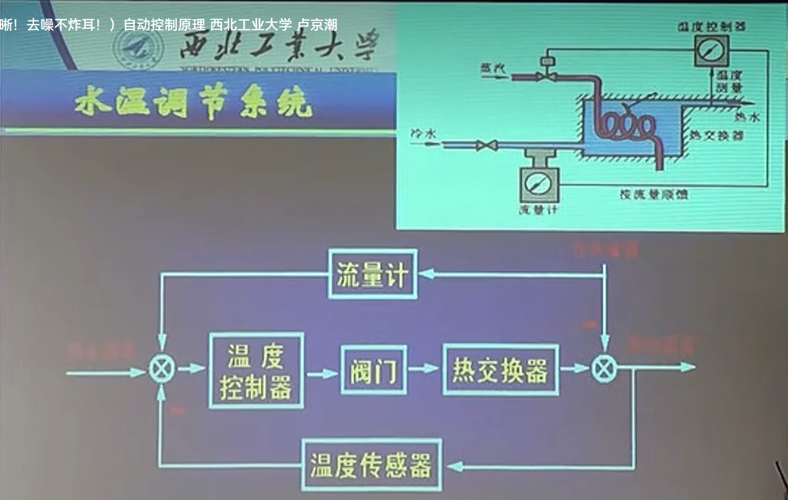
流量计可以在冷水流量增加的时候提前反应，让蒸汽变多，稳定温度
结构特点
-
通常分为两类：
- 按输入补偿的复合控制：在闭环基础上增加输入的前馈通道，使输出更快跟随输入。
- 按扰动补偿的复合控制：测量主要扰动，通过前馈控制器提前产生补偿作用，抵消扰动对输出的影响。
-
信号流既有反馈回路，又有前馈通路（不形成闭合回路）
传递函数关系（以扰动补偿为例）
设扰动 $D(s)$ 经扰动通道 $G_d(s)$ 影响输出，前馈补偿器为 $G_{ff}(s)$，反馈控制为常规闭环。理想补偿时：
$$
G_{ff}(s) = -\frac{G_d(s)}{G(s)}
$$
使扰动对输出的影响完全消除。
优点
- 结合了开环响应快与闭环精度高的优点
- 对主要扰动可实现“完全补偿”或“部分补偿”，大幅降低动态偏差
- 可同时改善跟踪性能与抗扰性能
缺点
- 结构更复杂，需额外测量输入或扰动信号
- 前馈补偿器设计依赖于精确模型，模型误差可能带来副作用
- 稳定性仍需由反馈部分保证
典型应用
高精度伺服系统、飞行器控制、高速加工机床、工业锅炉的给水控制等。
三者对比
| 类型 | 信号流向 | 有无反馈 | 精度 | 稳定性问题 | 结构复杂度 | 典型用途 |
|---|---|---|---|---|---|---|
| 开环 | 单向 | 无 | 低 | 无 | 简单 | 简易控制 |
| 闭环 | 有反馈回路 | 有 | 高 | 需考虑 | 中等 | 通用自动控制 |
| 复合 | 前馈+反馈 | 有 | 很高 | 需考虑（由反馈保证） | 复杂 | 高性能/高精度系统 |
结合你之前提到的方框图与传递函数内容：
- 开环控制可直接用方框串联表示。
- 闭环控制会引出比较点与反馈方框，形成典型反馈结构图。
- 复合控制则在前向通路或扰动支路增加前馈方框，可在方框图上用求和点或旁路支路表达。
框图模型元素
-
Signal line 信号(物理量)及传递方向:
-
用于表明信号的方向
像这样:
-
$$ \stackrel{U(s)}{\longrightarrow} $$
- 元部件 Functional Block:
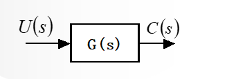
- 比较点 Sum Point(comparing point):
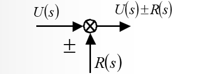
- 引出点 Branch point:
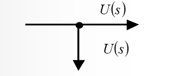
框图的绘制方法
理论步骤:
- 列写每个元件的原始方程（保留所有变量，便于分析），要考虑相互间负载效应
- 设初始条件为零，对这些方程进行拉氏变换，得到传递函数。然后分别以方框的形式将因果关系表示出来，而且这些方框中的传递函数都应具有典型环节的形式
- 将这些方框单元按信号流向连接起来，就组成完整的结构图
举个例子:
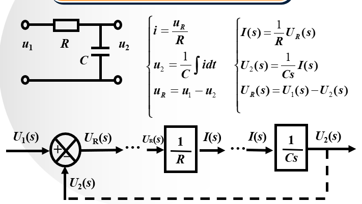
一些重要的元器件
-
电位器
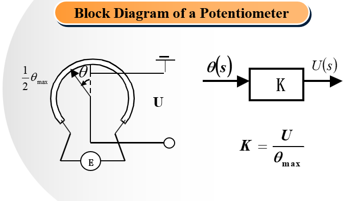
-
桥式误差角检测器
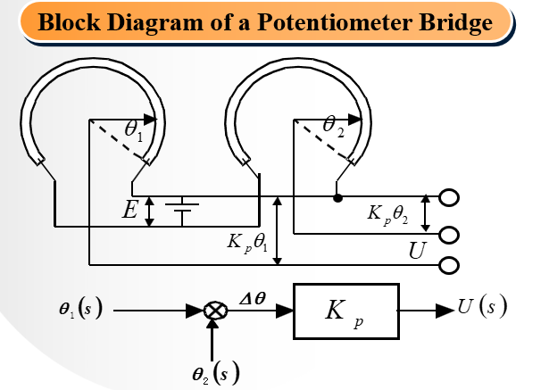
-
自整角机
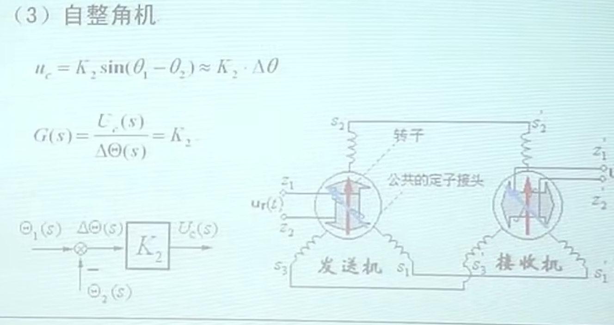
-
直流测速发电机
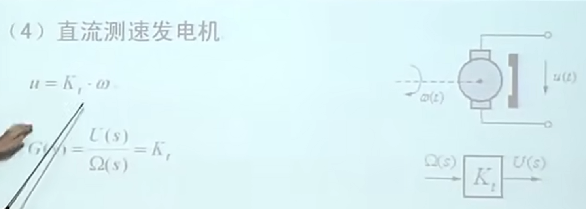
-
交流测速发电机
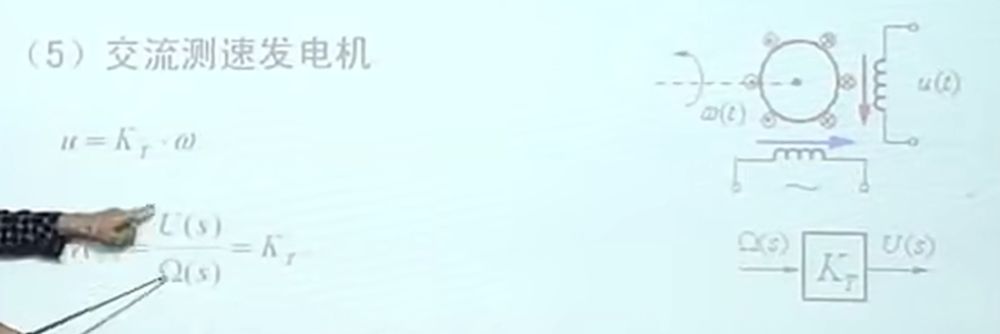
-
齿轮
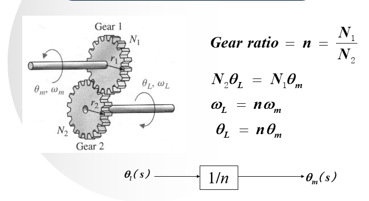
-
电枢控制直流电动机
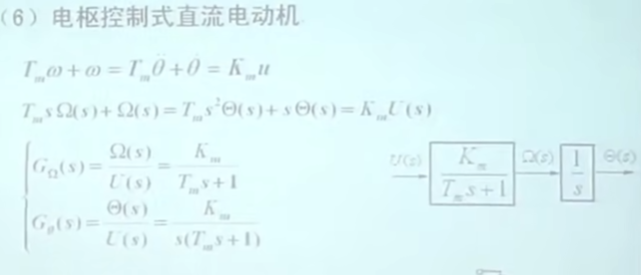
-
交流
和直流的图完全一样(原理不一样)
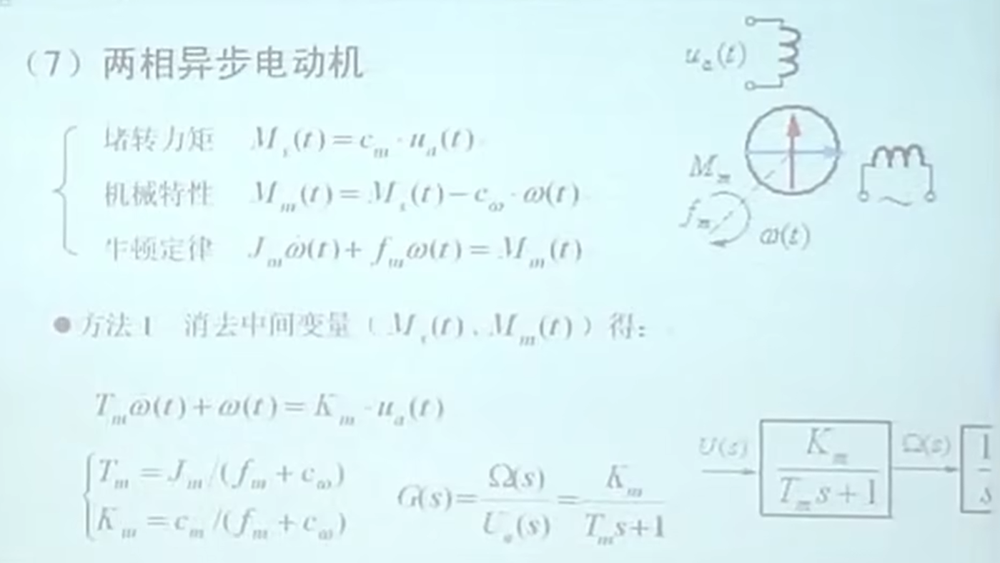
等效变换
-
串联
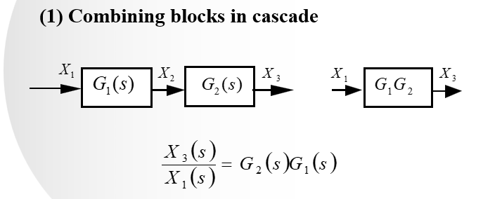
-
并联
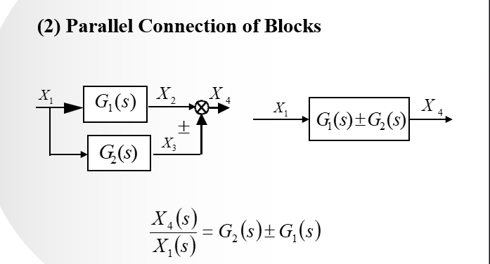
-
反馈，这里注意±相反
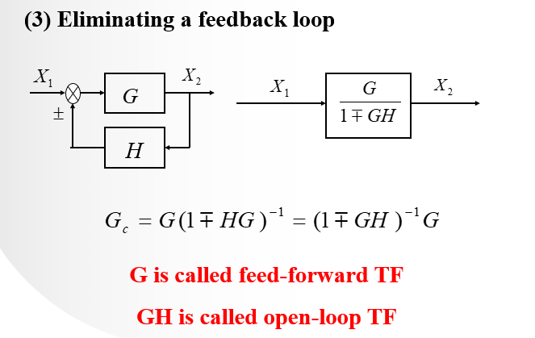
-
改变节点位置
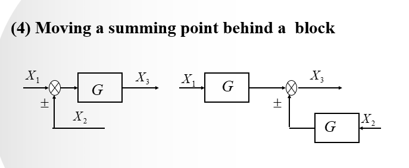
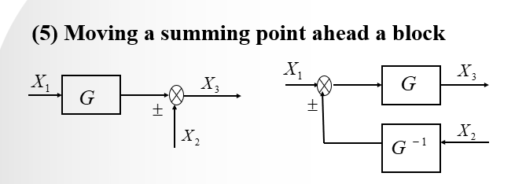
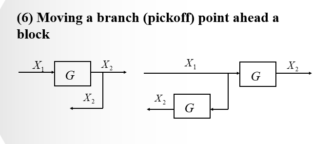
!
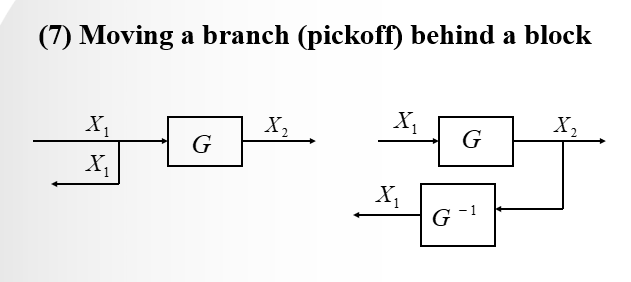
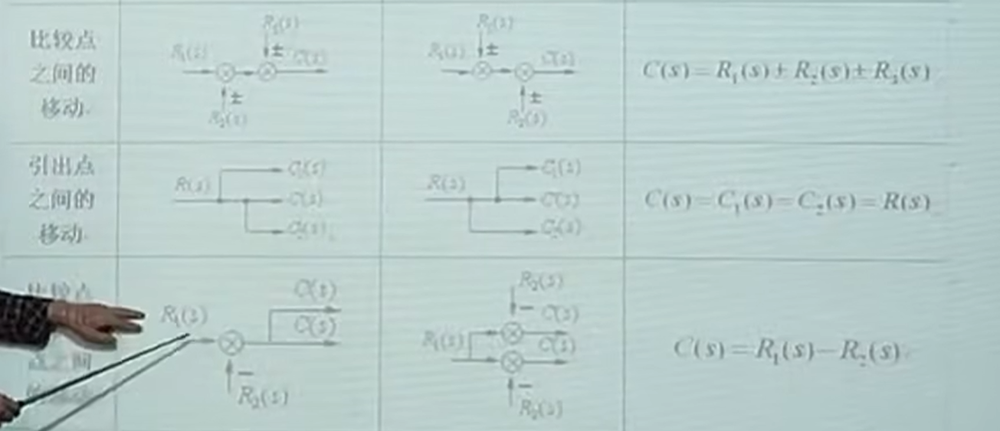
梅森信号流图增益公式
基本概念
-
节点 (Node)：代表信号或变量，分为源节点（输入，只有输出支路）、汇节点（输出，只有输入支路）、混合节点（既有输入又有输出支路）。
-
支路 (Branch)：连接两个节点的有向线段，支路上标注传递函数（增益）。
-
前向通路 (Forward Path)：从源节点到汇节点的通路，不重复经过任何节点。
-
回路 (Loop)：起点和终点为同一节点，且不重复经过任何节点的闭合通路。
-
不接触回路 (Non-touching Loops)：没有公共节点的回路，彼此互不影响。
公式定义
- 梅森增益公式（Mason’s Gain Formula）是控制工程中用于计算信号流图总增益的重要工具。它可以直接从系统结构图求出输入节点到输出节点之间的传递函数。
梅森增益公式的表达式为：
$$ G(s) = \frac{Y(s)}{R(s)} = \frac{\sum_{k=1}^{n} P_k \Delta_k}{\Delta} $$
其中：
- $P_k$ — 第 $k$ 条前向通路的增益
- $\Delta$ — 特征式（系统行列式）
- $\Delta_k$ — 第 $k$ 条前向通路对应的余子式
各部分的计算方法
1. 特征式 $\Delta$
特征式定义为：
$$ \Delta = 1 - \sum L_i + \sum L_i L_j - \sum L_i L_j L_k + \cdots $$
- $\sum L_i$ — 所有单回路增益之和
- $\sum L_i L_j$ — 所有两两互不接触回路增益乘积之和
- $\sum L_i L_j L_k$ — 所有三个互不接触回路增益乘积之和，依此类推
互不接触：两个回路之间没有公共节点。
2. 余子式 $\Delta_k$
$\Delta_k$ 是从 $\Delta$ 中去掉与第 $k$ 条前向通路相接触的回路后剩余的部分。
- 如果某回路与第 $k$ 条前向通路有公共节点，则从 $\Delta$ 中删除该回路（将其对应的项置为 0）
- 剩下的部分即为 $\Delta_k$
计算步骤
- 识别前向通路：找出从输入节点 $R(s)$ 到输出节点 $C(s)$ 的所有前向通路，记录每条通路的增益 $P_k$
- 找出所有回路：找出信号流图中所有闭合回路，记录每个回路的增益 $L_i$
- 计算特征式 $\Delta$：根据回路之间的接触关系，按公式计算 $\Delta$
- 计算余子式 $\Delta_k$：对每条前向通路，找出与其不接触的回路，计算相应的 $\Delta_k$
- 代入公式：将结果代入梅森增益公式，得到总增益
示例：典型反馈系统
考虑如下信号流图：
|
|
步骤 1：前向通路
只有一条前向通路： $$ P_1 = G_1 \times G_2 $$
步骤 2：回路
有一个回路： $$ L_1 = -G_1 G_2 H $$
步骤 3：特征式
$$ \Delta = 1 - L_1 = 1 + G_1 G_2 H $$
步骤 4：余子式
前向通路与回路 $L_1$ 有公共节点（节点①、②、③），因此 $\Delta_1 = 1$
步骤 5：总增益
$$ G(s) = \frac{P_1 \Delta_1}{\Delta} = \frac{G_1 G_2}{1 + G_1 G_2 H} $$
这与负反馈系统的闭环传递函数一致。
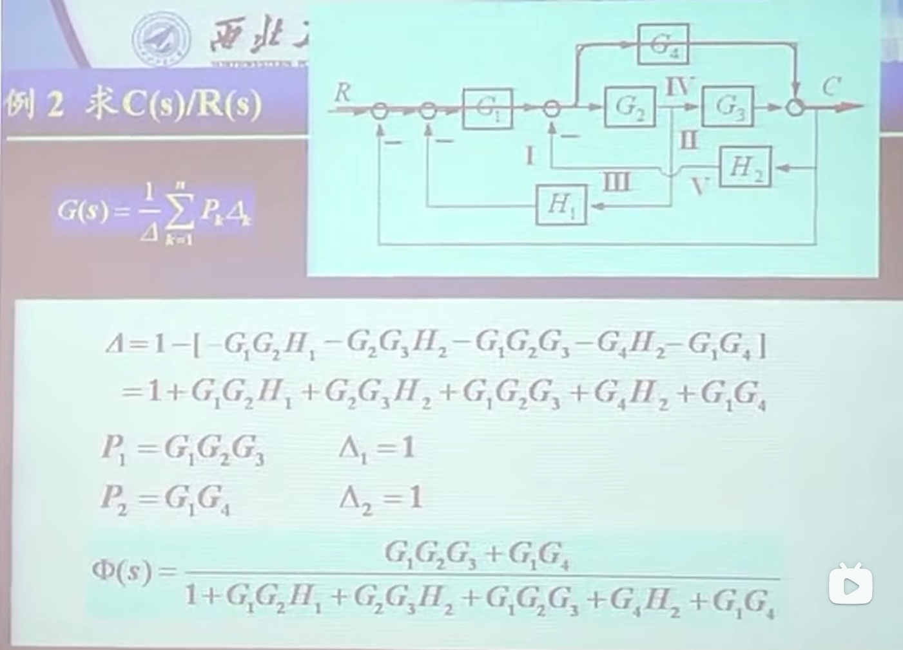
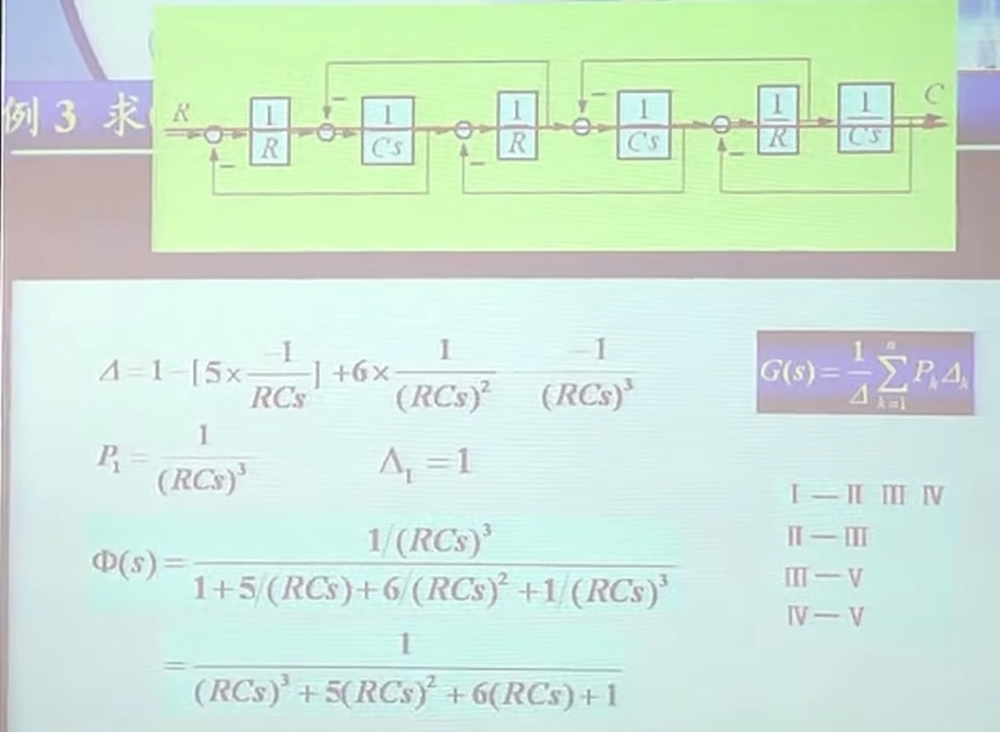
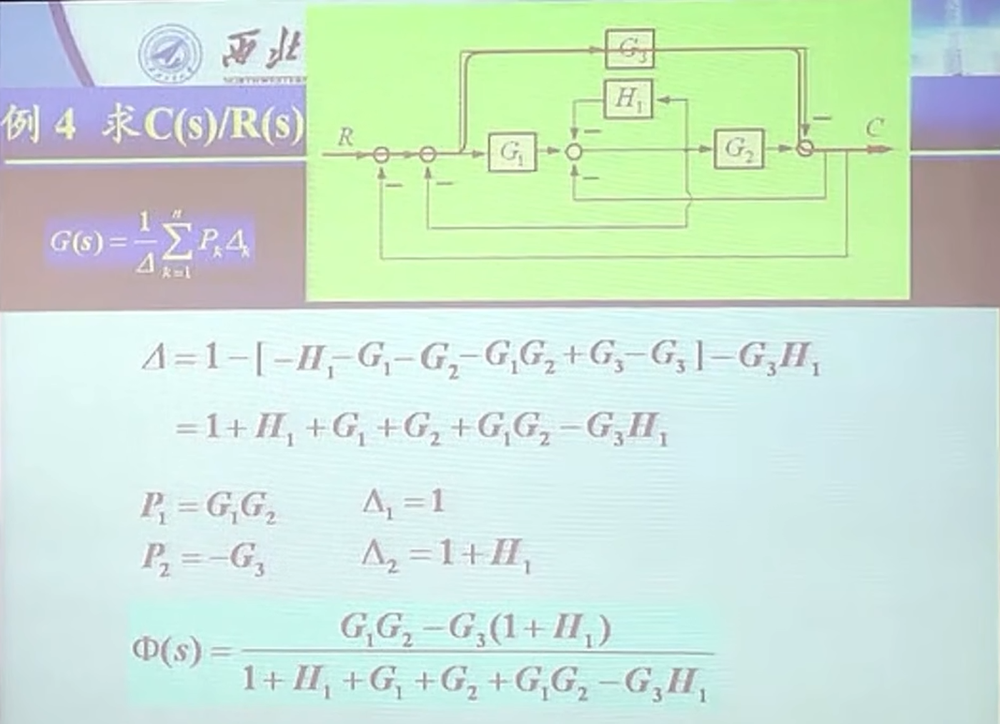
前馈通路不构成回路
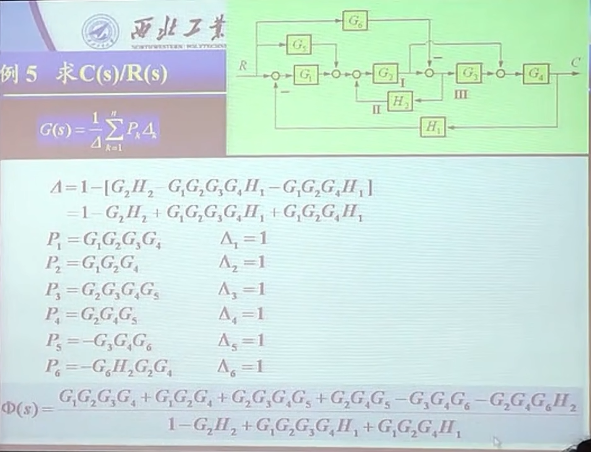
在考虑一个时，另一个输入为0
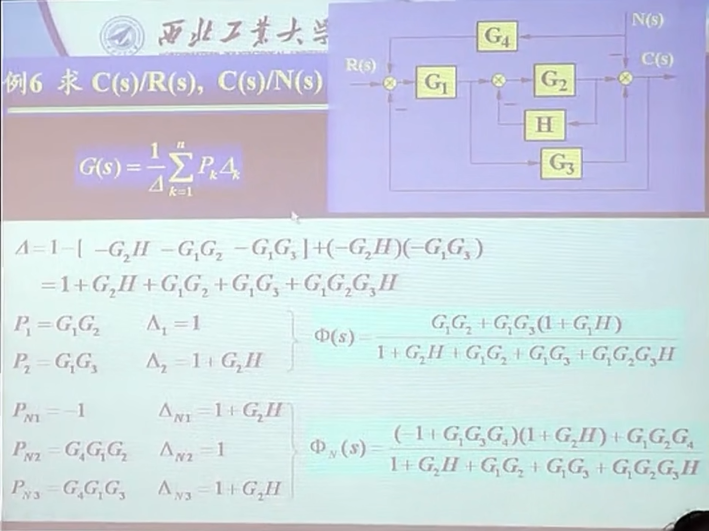
此处考虑R(s)时，上方G（4）是前馈通路，不构成回路，所以分母不发生改变
注意事项
- 前向通路方向：必须从输入节点指向输出节点，且不允许反向
- 回路接触判断：只要有一个公共节点，就算接触
- 增益符号：注意反馈回路中符号的影响（通常负反馈回路增益为负）
- 简化图形：对于复杂系统，可先简化信号流图再应用梅森公式
控制系统的传递函数
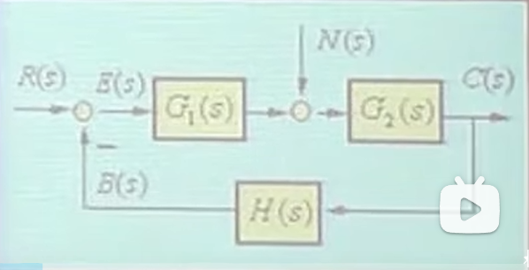
这是一个控制系统的典型结构图，它包含了:
- $R(s)$:输入
- $E(s)$:偏差
- $N(s)$:干扰
- $C(s):$输出
我们一般会分析这两个输入$R(s)$、$N(s)$对两个输出$E(s)$、$C(s)$的影响，即:
控制系统的输入引起的偏差是什么样子的?
控制系统的输入引起的输出是什么样子的?
干扰引起的偏差是什么样子的?
干扰引起的输出是什么样子的?
在写出四组传递函数之前，先介绍开环传递函数概念以及公式如下:
开环传递函数
开环传递函数是指闭环系统当中的传递函数
开环传递函数是指在闭环控制系统中，当把反馈回路断开（即不考虑反馈信号对输入的影响）时，从输入信号到反馈信号之间，整个前向通道和反馈通道串联起来的总传递函数。(也不考虑正负号)
通常用$G(s)H(s)$来表示
在上面的图中，开环传递函数为: $$ G(s)H(s)=G_1(s)G_2(s)H(s) $$
四组传递函数
-
输入$r(t)$作用下的闭环传递函数
- 输入对输出:
$$ \Phi(s)=\frac{C(s)}{R(s)}=\frac{G_1(s)G_2(s)}{1+G_1(s)G_2(s)H(s)} $$
- 输入对偏差:(误差传递函数)
$$ \Phi(s)=\frac{E(s)}{R(s)}=\frac{1}{1+G_1(s)G_2(s)H(s)} $$
-
干扰$n(t)$作用下的闭环传递函数
- 干扰对输出:(干扰作用下的闭环传递函数)
$$ \Phi(s)=\frac{C(s)}{N(s)}=\frac{G_2(s)}{1+G_1(s)G_2(s)H(s)} $$
- 干扰对偏差:（干扰作用下的误差传递函数）
$$ \Phi(s)=\frac{E(s)}{N(s)}=\frac{-H(s)G_2(s)}{1+G_1(s)G_2(s)H(s)} $$
-
系统的总输出$C（s）$以及总误差$E（s）$: $$ C(s)=\frac{G_1(s)G_2(s)·R(S)}{1+G_1(s)G_2(s)H(s)}+\frac{G_2(s)·N(s)}{1+G_1(s)G_2(s)H(s)} $$
$$ E(s)=\frac{R(s)}{1+G_1(s)G_2(s)H(s)}+\frac{-H(s)G_2(s)·N(s)}{1+G_1(s)G_2(s)H(s)} $$
例题
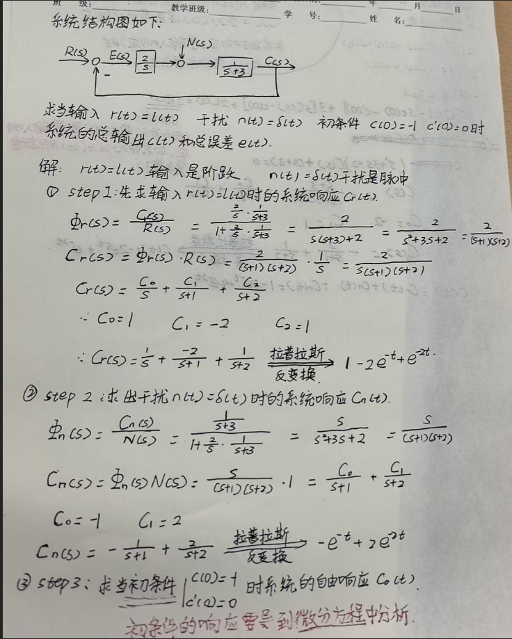
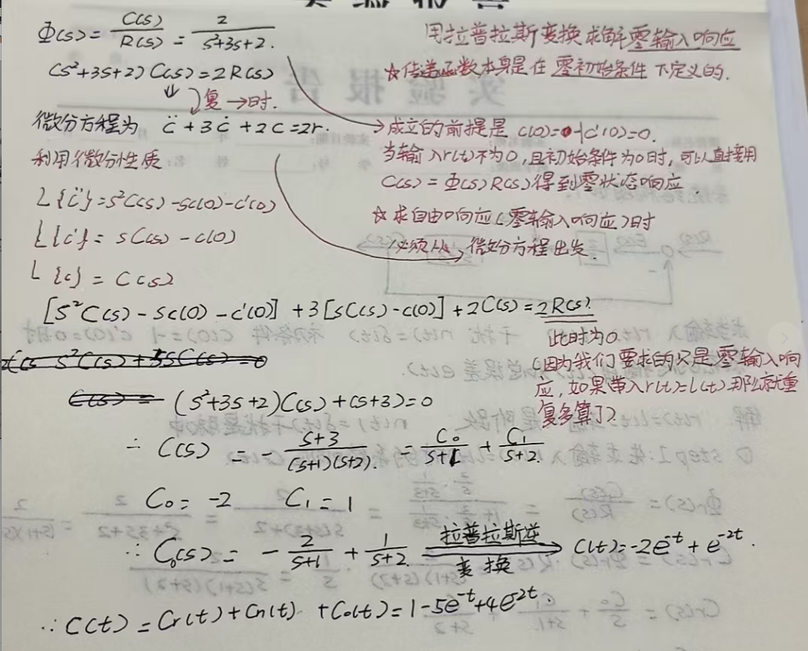